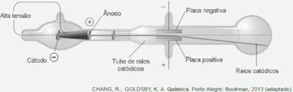

(Enem Digital/2020) No final do século XIX, muitos cientistas estavam interessados nos intrigantes fenômenos observados nas ampolas de raios catódicos, que são tubos sob vácuo em que se ligam duas placas a uma fonte de alta tensão. Os raios catódicos passam através de um orifício no ânodo e continuam o percurso até a outra extremidade do tubo, onde são detectados pela fluorescência produzida ao chocarem-se com um revestimento especial, como pode ser observado na figura. Medições da razão entre a carga e a massa dos constituintes dos raios catódicos mostram que a sua identidade independe do material do cátodo ou do gás dentro das ampolas.

Essa radiação invisível detectada nas ampolas é constituída por